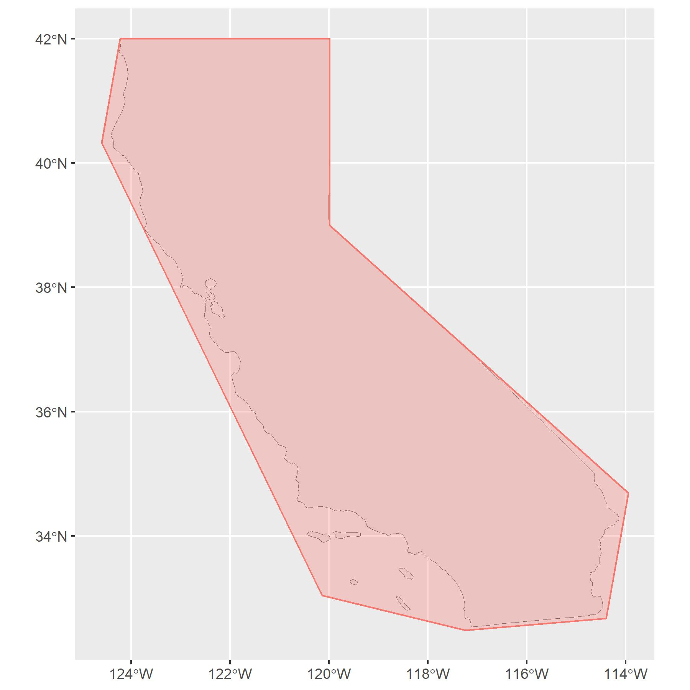
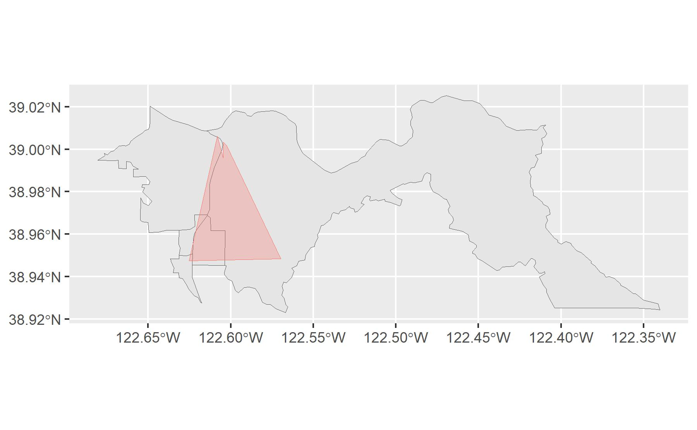

library(tigris) # to download CA shapefile from the Census
library(jsonlite) # to parse responses from the OpenFEMA API
library(sf) # for manipulating shapefile geometry information
library(ggplot2) # to make plots
library(tidycensus) # to get US Census data
library(dplyr) # for data manipulation
library(tidyr) # for data manipulationCalifornia Fire Evacuations
A proof of concept for the American Red Cross about making data driven predictions of shelter demand related to California wildfire evacuation orders
Intro/Overview
One of the volunteer projects I worked on for the American Red Cross (ARC) was for a chapter in northern California which wanted to improve predictions for shelter demand due to fire-related evacuations. When a wildfire happens, the local authorities may issue an evacuation order to tell people in the affected area to evacuate.
ARC helps by activating and staffing shelters near the affected area so that people who have to flee from the fire have a place to spend the night. These shelters are usually places like stadiums or schools with gymnasiums which have agreements with ARC to use their space as a temporary shelter in emergency situations. A volunteer from ARC will go to the shelter location to make sure it is open and ready to receive people in need.
ARC needs to decide which potential shelter locations to activate for any given evacuation order. There are a lot of factors that go into making this decision, but one of them is an estimate of demand for shelter. How many people will actually want to make use of the shelter that ARC will provide?
Setting Up
Loading Libraries
Getting the Data
The first thing I needed to do is find data related to the problem. For data about evacuation orders related to fires in CA, the OpenFEMA datasets looked like a good option. In particular, the Integrated Public Alert and Warning System (IPAWS) has an API which lets users query historical alert data. This is useful for this problem about CA fires because many counties in CA began adopting IPAWS to distribute their alerts starting around 2013, so it should contain data about the evacuation alerts of interest.
Another data source is the US Census. The evacuation order has information about what geographic region is affected, but no information about the people in that region or their demographics. That information will have to come from the census.
Get Data from the OpenFEMA API
The IPAWS API lets users query based on certain available fields as listed in their documentation. However, it is a little bit tricky to get what I’m looking for because there is no “state” field to use for filtering so I cannot ask for results where “state=CA”. Instead the user can pass in a geometry in the shape of a polygon as a search area, so it is necessary for me to first represent CA as a polygon in Well Known Text (WKT) format to pass to the API as a filter.
# get CA shapefile from the census
ca = tigris::states(cb = TRUE, resolution = "20m")
ca = ca[ca$NAME == "California",]
# my approximate guess for longitude and latitude
# for a polygon covering CA
ca_approx = data.frame(
lon = c(-124.2196,-119.9818,-119.9922,-113.9484,-114.3979,-117.2380,-120.1382,-124.5953),
lat = c(42.0019,42.0089,39.0026,34.6875,32.6730,32.4818,33.0436,40.3261)
)
# same as above, just transposed in format
# to align with what the API expects
# POLYGON((-124.2196 42.0019,-119.9818 42.0089,-119.9922 39.0026,-113.9498 34.6875,-114.3979 32.6730,-117.2380 32.4818,-120.1382 33.0436,-124.5953 40.3261))
# verify coverage with plot
ggplot() +
geom_sf(data = ca) +
geom_polygon(aes(x = lon, y = lat), data = ca_approx,
color = "#F8766D", fill = "#F8766D", alpha = 0.3) +
theme(axis.title = element_blank())
My simple polygon covers California as desired. It is okay that it covers some space beyond California because I am only using it to filter results from IPAWS. It may pick up a few cases outside of California, but these will be eliminated later when I merge the IPAWS data with the US Census data since they will not match up with any CA census geometries.
Now I can start making requests from the IPAWS API. I will skip all the trial and error I had to go through to get it to work and just show the final code that worked for me. Comments below in the relevant sections discuss some of these decisions.
# request to OpenFEMA API
# give back status='Actual" (as opposed to test alerts)
# and state=CA (geo polygon information interects my approximated CA polygon)
api_query_base = "https://www.fema.gov/api/open/v1/IpawsArchivedAlerts?$filter=status eq 'Actual' and geo.intersects(searchGeometry, geography 'POLYGON((-124.2196 42.0019,-119.9818 42.0089,-119.9922 39.0026,-113.9498 34.6875,-114.3979 32.6730,-117.2380 32.4818,-120.1382 33.0436,-124.5953 40.3261))') and sent gt 'yyyy-01-01T00:00:01.000z' and sent lt 'yyyy-12-31T23:59:59.000z'&$orderby=sent&$inlinecount=allpages&$skip="
# OpenFEMA API returns 1000 records max
# so need to page through sets of 1000
# https://www.fema.gov/about/openfema/api
results_df = data.frame()
results_poly = list()
# IPAWS data is available starting in June 2012
# I am querying one year of data at a time
# because I keep running into errors where the API
# doesn't want to return results when the page count
# gets too high
for(year in 2012:2020){
# set up counters to page through data
last_page = FALSE
skip_records = 0
while(!last_page){
# query API for up to 1000 records
api_query = paste0(api_query_base, skip_records)
api_query = gsub("yyyy", year, api_query)
json_result = readLines(api_query)
parsed_list = fromJSON(json_result)
n_records = nrow(parsed_list[[2]])
# is this the last page of results?
# if so end loop
if(n_records < 1000){ last_page = TRUE }
# convert results to single data frame
# plus list of polygons
for(i in 1:n_records){
# get metadata for each alert
df = data.frame(
sent = parsed_list[[2]][i,]$sent,
status = parsed_list[[2]][i,]$status,
identifier = parsed_list[[2]][i,]$identifier,
category = paste0(parsed_list[[2]][i,]$info[[1]]$category[[1]], collapse = ", "),
areaDesc = parsed_list[[2]][i,]$info[[1]]$area[[1]]$areaDesc,
responseType = paste0(parsed_list[[2]][i,]$info[[1]]$responseType[[1]], collapse = ", "),
urgency = paste0(unique(parsed_list[[2]][i,]$info[[1]]$urgency), collapse = ", "),
severity = paste0(unique(parsed_list[[2]][i,]$info[[1]]$severity), collapse = ", "),
certainty = paste0(unique(parsed_list[[2]][i,]$info[[1]]$certainty), collapse = ", "),
effective = ifelse(is.null(parsed_list[[2]][i,]$info[[1]]$effective), "", paste0(unique(parsed_list[[2]][i,]$info[[1]]$effective), collapse = ", ")),
onset = ifelse(is.null(parsed_list[[2]][i,]$info[[1]]$onset), "", paste0(unique(parsed_list[[2]][i,]$info[[1]]$onset), collapse = ", ")),
expires = ifelse(is.null(parsed_list[[2]][i,]$info[[1]]$expires), "", paste0(unique(parsed_list[[2]][i,]$info[[1]]$expires), collapse = ", ")),
description = ifelse(is.null(parsed_list[[2]][i,]$info[[1]]$description), "", paste0(unique(parsed_list[[2]][i,]$info[[1]]$description), collapse = ", ")),
instruction = ifelse(is.null(parsed_list[[2]][i,]$info[[1]]$instruction), "", paste0(unique(parsed_list[[2]][i,]$info[[1]]$instruction), collapse = ", "))
)
# sometimes evacuation orders for fires might not be coded as category='Fire'
# or as responseType='Evacuate' so filter more broadly
if((df$category != "Met") & (grepl("Evacuate",df$responseType) | (grepl("fire",df$description,ignore.case = TRUE) & grepl("evacuat",df$description,ignore.case = TRUE)) | (grepl("fire",df$instruction,ignore.case = TRUE) & grepl("evacuat",df$instruction,ignore.case = TRUE)))){
results_df = rbind(results_df, df)
results_poly[[length(results_poly)+1]] = parsed_list[[2]][i,]$info[[1]]$area[[1]]$polygon$coordinates
}
}
# print out progress
print(paste0("Year: ", year, ", Records Processed: ", skip_records + n_records))
# increment page skip count
skip_records = skip_records + 1000
}
}
# reformat polygon matrix results to WKT text fields
# so they can be represented in a column vector
poly_vec = do.call("c", lapply(results_poly, function(x){
paste0(apply(x[[1]], 2, function(y){paste0(y,collapse = " ")}), collapse = ",")
}))
results_df$areaPolygon = sub("^[^,]*,", "", poly_vec)
results_df$areaPolygon = paste0("POLYGON((", poly_vec, "))")Get Data from the US Census
There is a lot of demographic information available via the US Census API, so it helps to have some idea of what to get in advance. In my conversations with ARC, they said age and income are the ones they would consider most important. People who are very old are less likely to leave their home in the event of an evacuation order and consequently less likely to seek shelter from ARC. Similarly, people with higher income may have a second home they can travel to or choose to find paid accommodations with a higher level of comfort than the free but sparse shelter option that ARC is providing.
I found this information in the American Community Survey (ACS) 5-year data. Here is a link to the census page for this data source. The 5-year data is great because it has information at the block-group level, which is a really low level geography. Smaller geographic units are better because they should allow for closer alignment with the arbitrary areas of the evacuation orders than larger units which may have large areas that are not in the region of interest.
The data dictionary is large and hard to wade through. I found what I was looking for under the variable B19037, which provides what is basically the joint distribution of age and income. However, it is not easy to separate age and income from the way the data is given, so I created the mapping manually since the number of cases is small enough and this is the only data I needed.
# read in the mapping I created manually in a csv file
B19037_mapping = read.csv("census_B19037_definitions.csv")
# display mapping table
knitr::kable(head(B19037_mapping))| variable | age_householder | income |
|---|---|---|
| B19037_003 | 0_24 | 0_10K |
| B19037_004 | 0_24 | 10K_15K |
| B19037_005 | 0_24 | 15K_20K |
| B19037_006 | 0_24 | 20K_25K |
| B19037_007 | 0_24 | 25K_30K |
| B19037_008 | 0_24 | 30K_35K |
Using the census API requires the user to have an API key. This is a really easy thing to apply for and should only take a couple minutes to both apply for it and receive it. Here is the page to apply: https://api.census.gov/data/key_signup.html
# store census API key for use in query
# using tidycensus package functions
CENSUS_API_KEY = "YOUR API KEY HERE"
census_api_key(CENSUS_API_KEY)
# download the data
acs5_B19307 = get_acs(geography = "block group",
variables = B19307_mapping$variable,
year = 2019,
state = "CA",
geometry = TRUE)Data Transformations
Having the joint distribution by default is great, but it wouldn’t hurt to decompose age and income into their marginal distributions too. I might as well do that now to prepare for later stages where I might want to use them independently.
# compute marginal distribution for age
df_age = as.data.frame(acs5_B19307) %>%
merge(B19307_mapping, by = "variable", all.x = TRUE) %>%
mutate(age_householder = paste0("age_", age_householder)) %>%
group_by(GEOID, age_householder) %>%
summarise(age_count = sum(estimate)) %>%
ungroup() %>%
pivot_wider(names_from = age_householder, values_from = age_count)
# compute marginal distribution for income
df_income = as.data.frame(acs5_B19307) %>%
merge(B19307_mapping, by = "variable", all.x = TRUE) %>%
group_by(GEOID, income) %>%
summarise(income_count = sum(estimate)) %>%
ungroup() %>%
pivot_wider(names_from = income, values_from = income_count)
# having trouble pivoting original data
# in the presence of the geometry feature
# so remove the geometry and do it separately here
df_joint = as.data.frame(acs5_B19307) %>%
select(GEOID, variable, estimate) %>%
pivot_wider(names_from = variable, values_from = estimate)
# join marginal distributions into original data
df_acs5 = acs5_B19307 %>%
select(GEOID, geometry) %>%
filter(!duplicated(GEOID)) %>%
inner_join(df_age, by = "GEOID") %>%
inner_join(df_income, by = "GEOID") %>%
inner_join(df_joint, by = "GEOID") %>%
mutate(block_group_area = st_area(.))Combining the Data
Now that I have data from IPAWS on fire-related evacuation orders in CA, and data on population counts by age and income in CA at the census block group level, I would like to combine that information. This can be done by checking for overlaps between the geometries of the two data sources.
# put IPAWS alert data in a form the sf package likes
# specifying where to find the geometry information
# and in what form (WKT)
df_alerts = st_as_sf(results_df, wkt = "areaPolygon")
st_crs(df_alerts) = st_crs(df_acs5)
# start by computing just the first case as an example
df_intersections = df_alerts[1,] %>%
select(identifier, areaPolygon) %>%
st_intersection(df_acs5) %>%
mutate(intersect_area = st_area(.)) %>%
mutate(pct_overlap = as.numeric(intersect_area/block_group_area)) %>%
st_drop_geometry()
# plot the census block groups and the
# evacuation area to show the overlap
ggplot() +
geom_sf(data=df_acs5[df_acs5$GEOID %in% df_intersections$GEOID,]) +
geom_sf(data=df_alerts[1,],color = "#F8766D", fill = "#F8766D", alpha = 0.3)
Even though the number of evacuation orders is small (just a couple hundred) the time it takes to compute all the intersections and areas is several hours.
for(i in 2:nrow(df_alerts)){
# compute for one evacuation order at a time
temp = df_alerts[i,] %>%
select(identifier, areaPolygon) %>%
st_intersection(df_acs5) %>%
mutate(intersect_area = st_area(.)) %>%
mutate(pct_overlap = as.numeric(intersect_area/block_group_area)) %>%
st_drop_geometry()
# merge into larger data frame
df_intersections = rbind(df_intersections, temp)
}Aggregate by Evacuation Event
This combined data shows how the area covered by the evacuation order overlaps with the defined census block groups. This data needs to be aggregated at the level of evacuation orders so that one evacuation order has one set of corresponding variables. Here are a couple of simple options.
- Weight the census data by the percentage of the area that overlaps with the evacuation order area. If there is more overlap, more of the data from that census block group will be used. This sounds logical, but it assumes that the population of individuals is uniformly distributed throughout that block group, which does not have to be true.
- Give 100% weight to all census block groups that intersect with the evacuation order area. This ensures no individuals are incorrectly excluded if the population of a block group happens to be concentrated in a small area within that block group. However, it may lead to overestimating the relevant population for the evacuation order.
Since the right choice is not immediately obvious, I will just group the data both ways and figure out which way is preferable at a later stage.
# option 1: census features are weighted average
# based on the intersection of their block group area
# with the evacuation order area
df_intersections_avg = df_intersections %>%
select(-GEOID) %>%
group_by(identifier) %>%
summarise_all(~ sum(.x * pct_overlap)) %>%
select(-pct_overlap) %>%
inner_join(results_df[,c("identifier","sent","areaDesc")], by = "identifier")
# option 2: census features are summed together
# (given 100% weight) as long as their block group area
# has any overlap with the evacuation order area
df_intersections_sum = df_intersections %>%
select(-GEOID, -pct_overlap) %>%
group_by(identifier) %>%
summarise_all(~ sum(.x)) %>%
inner_join(results_df[,c("identifier","sent","areaDesc")], by = "identifier")Predicting Shelter Demand
The next step is to use the data gathered around each evacuation event to predict how many people will seek shelter from ARC. This has to be kept very general because I do not have access to the data required to make meaningful progress beyond this point.
Get Data on ARC Shelter Demand
ARC should have some basic data about the number of people who took shelter at ARC shelters during historical wildfire evacuation events. As a volunteer working on this proof of concept, this data was not made available to me at this stage of the analysis. As such, I have to make up some fake data to use here.
Generating fake data about shelter demand means none of the following results are meaningful and certain decisions about the analysis cannot be made here. For example, I discussed above two options for how data could be aggregated for unique evacuation events and the way to pick which method to use would be to see which produced the better fitting model. Since I don’t have real data, I cannot evaluate which method will be better, so I will arbitrarily pick the second method just to have some data to use here.
I will assume the number of people who seek shelter is drawn from a random Poisson distribution (so that it is always an integer number of people), and is about 10% of the impacted population.
# calculate total population from age variables
n_events = nrow(df_intersections_sum)
event_pop = apply(df_intersections_sum[,grepl("age",colnames(df_intersections_sum))], 1, sum)
# add affected population and random poisson shelter demand
df_intersections_sum$event_pop = event_pop
df_intersections_sum$shelter_demand = rpois(n_events, lambda = 0.1*event_pop)This also skips several other complications that are likely to arise with the actual data, such as figuring out how to match the shelter data with the right evacuation event.
A Simple Model
My first instinct when thinking about this problem is to try a Poisson regression. Since the number of people seeking shelter is count data, the Poisson distribution is convenient for modeling it because it will handle cases where the count is zero if that occurs (no one showed up at the shelter) and will enforce non-negativity.
It may be useful to think about this problem in the context of fractions, as in “what fraction of the exposed population will seek shelter?” This is also something easily incorporated within the Poisson regression framework.
The basic Poisson regression:
\[ log(E(Y|x)) = Bx \] Poisson regression modeling counts as a fraction of exposed population:
\[ log(\frac{E(Y|x)}{exposure}) = log(E(Y|x)) - log(exposure) = Bx - log(exposure) \]
I will choose the second option just to showcase how the implementation works. I will start with some data transformations, scaling the features by the exposed population so that they are fractions of the total population rather than counts. This normalizes them across observations. I will just use the marginal age variables here. In practice I would want to include the income variables and then also test whether the interaction variables from the joint distribution are useful, but none of that matters with the fake data I have right now. Then I can fit the model.
# build modeling dataset
# start with just the age categories
model_data = df_intersections_sum[,grepl("age",colnames(df_intersections_sum))]
# normalize by the exposed population in each event
model_data = sweep(model_data, 1, 1/event_pop, FUN="*")
# drop the first variable to avoid perfect multicollinearity
# since they will all add up to 1 otherwise
model_data = model_data[,-1]
# add the target variable and exposure variable
model_data$y = df_intersections_sum$shelter_demand
model_data$exposure = event_pop
# fit the model
fit = glm(y ~ . - exposure + offset(log(exposure)), data = model_data, family=poisson(link=log))
summary(fit)
Call:
glm(formula = y ~ . - exposure + offset(log(exposure)), family = poisson(link = log),
data = model_data)
Coefficients:
Estimate Std. Error z value Pr(>|z|)
(Intercept) -2.29769 0.12939 -17.758 <2e-16 ***
age_25_44 -0.05200 0.16561 -0.314 0.754
age_45_64 -0.01567 0.11359 -0.138 0.890
age_65_inf 0.03865 0.13749 0.281 0.779
---
Signif. codes: 0 '***' 0.001 '**' 0.01 '*' 0.05 '.' 0.1 ' ' 1
(Dispersion parameter for poisson family taken to be 1)
Null deviance: 188.26 on 247 degrees of freedom
Residual deviance: 181.78 on 244 degrees of freedom
AIC: 2018.7
Number of Fisher Scoring iterations: 3The only part of the model that looks significant is the intercept, which is correct because I generated shelter demand as a constant 10% of the exposed population. In the real data, I might expect to see exposed populations made up of younger people or having lower incomes significantly affect shelter demand.
Prediction Intervals
The Poisson regression I just constructed models expected shelter demand. In other words, the average number of people expected to seek shelter. The estimate produced by the model may over-predict or under-predict. ARC may care more about under-predicting than over-predicting. Depending on the resources available, ARC may prefer to over-predict demand and send more people to open unnecessary shelters as opposed to under-predicting demand and having to turn away people seeking shelter or not have shelter available for them.
One way to address this within the context of this model is a prediction interval. Unlike a confidence interval which only incorporates uncertainty about model parameter estimates, a prediction interval also incorporates uncertainty about the outcomes. Building a 95% prediction interval means that we would expect that the observed outcome falls within the interval 95% of the time. Using the upper bound of that interval may be a good way to estimate an upper limit of what shelter demand could be for a particular scenario.
# what percentage of model predictions
# under-estimate shelter demand?
mean(model_data$y - predict(fit, type = "response") > 0)[1] 0.5# bootstrap setup
set.seed(42)
n_bootstraps = 1000
boot_results = matrix(0, nrow = nrow(model_data), ncol = n_bootstraps)
# bootstrap prediction interval
for(i in 1:n_bootstraps){
# re-sample from modeling data with replacement
boot_idx = sample(nrow(model_data), replace = TRUE)
df_boot = model_data[boot_idx,]
# fit the model with bootstrapped data
fit_boot = glm(y ~ . - exposure + offset(log(exposure)),
data = df_boot, family=poisson(link=log))
# predictions of actual data using bootstrapped model
# distributions from this step would give the confidence interval
y_pred_boot = predict(fit_boot, newdata = model_data, type = "response")
# now need to account for residual variance
# given that the data is assumed to be poisson distributed
# the prediction is the expects value or lambda
# so we can just sample from a poisson distribution with that lambda
boot_results[,i] = rpois(nrow(model_data), lambda = y_pred_boot)
}
# 95% prediction interval
lower_bound = apply(boot_results, 1, quantile, probs = 0.025)
upper_bound = apply(boot_results, 1, quantile, probs = 0.975)
# what percentage of the time does
# the upper bound of the 95% prediction interval
# under-estimate shelter demand?
mean(model_data$y - upper_bound > 0)[1] 0.02016129Conclusion
I have shown a proposed approach for acquiring data from FEMA and the US Census to support making data-driven estimates of shelter demand during wildfire evacuations in California. While the full analysis is incomplete without the actual shelter data from ARC, I laid out some initial possibilities based on the information available.